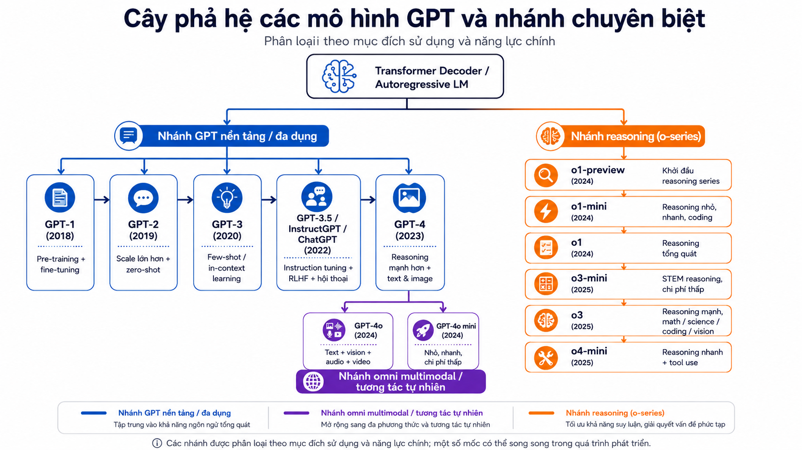
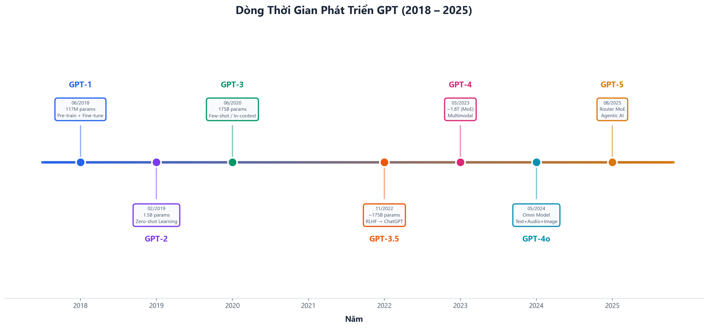
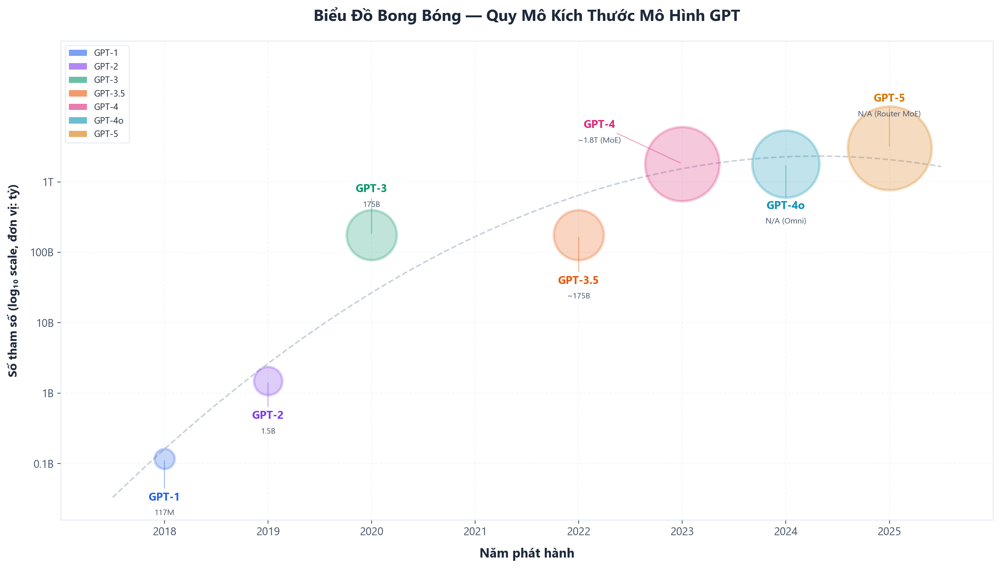
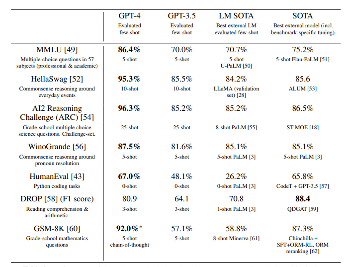

1. Tóm tắt
- GPT tiến hóa theo 5 trục chính: pre-training, scaling, in-context learning, alignment/RLHF, multimodal/omni interaction.
- GPT-1, GPT-2, GPT-3 có thông số công khai trong paper gốc.
- Từ GPT-3.5 trở đi, nhiều chi tiết nội bộ như số tham số, số layer, dữ liệu huấn luyện đầy đủ không được OpenAI công bố chính thức.
| Model | Năm | Ý tưởng cốt lõi | Điểm cần nhớ |
|---|---|---|---|
| GPT-1 | 2018 | Pre-train rồi fine-tune | Chứng minh transfer learning hiệu quả cho NLP |
| GPT-2 | 2019 | Scale lên 1.5B, zero-shot | Một LM lớn có thể làm nhiều tác vụ qua prompt |
| GPT-3 | 2020 | 175B, few-shot/in-context learning | Làm tác vụ mới từ vài ví dụ trong prompt |
| GPT-3.5 | 2022 | Instruction tuning + RLHF | Nền tảng cho ChatGPT, tối ưu làm theo ý người dùng |
| GPT-4 | 2023 | Multimodal, reasoning mạnh hơn | Nhận text + ảnh, đạt điểm cao trên nhiều benchmark |
| GPT-4o | 2024 | Omni multimodal | Text, vision, audio trong một mô hình end-to-end |

2. Lịch sử
- GPT-1 đặt nền móng cho hướng generative pre-training: học từ văn bản thô trước, sau đó fine-tune cho từng tác vụ.
- GPT-2 cho thấy khi scale đủ lớn, mô hình bắt đầu làm được nhiều tác vụ ở chế độ zero-shot.
- GPT-3 mở rộng hiện tượng này thành few-shot / in-context learning.
- GPT-3.5 biến GPT thành trợ lý hội thoại nhờ instruction tuning + RLHF.
- GPT-4 mở rộng GPT sang đa phương thức text + image.
- GPT-4o hợp nhất text, vision, audio trong một mô hình omni end-to-end.

Bảng tổng quan tính năng cốt lõi qua từng thế hệ
| Tính năng | GPT-1 | GPT-2 | GPT-3 | GPT-3.5 | GPT-4 | GPT-4o |
|---|---|---|---|---|---|---|
| Năm | 2018 | 2019 | 2020 | 2022 | 2023 | 2024 |
| Kiến trúc | Decoder-only Transformer | Decoder-only Transformer | Decoder-only Transformer | Decoder-only Transformer + RLHF | Không công bố | Không công bố |
| Phương pháp học nổi bật | Pre-train + fine-tune | Zero-shot | Few-shot / in-context learning | SFT + RLHF | RLHF + multimodal input | End-to-end text, vision, audio |
| Context window | 512 | 1,024 | 2,048 | Tùy phiên bản | Tùy phiên bản | Tùy phiên bản |
| Đầu vào | Text | Text | Text | Text | Text + image | Text + audio + image + video input |
| Đầu ra | Text / task label | Text | Text | Text hội thoại | Text | Text + audio + image tùy sản phẩm |
| Bước nhảy chính | Transfer learning | Scaling | In-context learning | Alignment | Multimodal reasoning | Real-time omni interaction |
3. Model size
Scaling laws
- Scaling laws mô tả xu hướng: khi tăng số tham số, dữ liệu và compute huấn luyện, loss/hiệu năng thường cải thiện theo quy luật có thể dự đoán.
- GPT-1 → GPT-3 là giai đoạn scale rất rõ:
- GPT-1: 117M tham số.
- GPT-2: 1.5B tham số ở bản lớn nhất.
- GPT-3: 175B tham số.
- Sau GPT-3, thông số nội bộ không còn được công bố đầy đủ.
- Vì vậy, không nên trình bày các con số như số tham số GPT-4 hoặc GPT-4o nếu không có nguồn chính thức.
Bảng so sánh tham số
| Model | Năm | Số tham số | Số layer | Hidden size | Attention heads | Tăng trưởng |
|---|---|---|---|---|---|---|
| GPT-1 | 2018 | 117M | 12 | 768 | 12 | — |
| GPT-2 XL | 2019 | 1.5B | 48 | 1,600 | 25 | ×12.8 |
| GPT-3 | 2020 | 175B | 96 | 12,288 | 96 | ×117 |
| GPT-3.5 | 2022 | Không công bố | Không công bố | Không công bố | Không công bố | — |
| GPT-4 | 2023 | Không công bố | Không công bố | Không công bố | Không công bố | — |
| GPT-4o | 2024 | Không công bố | Không công bố | Không công bố | Không công bố | — |

Quy luật Chinchilla
- Quy luật Chinchilla nhấn mạnh: không chỉ tăng tham số, mà phải cân bằng giữa:
- kích thước mô hình,
- số token huấn luyện,
- ngân sách compute.
- Với cùng compute, một model nhỏ hơn nhưng được huấn luyện trên nhiều token hơn có thể hiệu quả hơn model rất lớn nhưng thiếu dữ liệu.
- Ý nghĩa với GPT:
- GPT-1 → GPT-3: tăng mạnh về quy mô tham số.
- Sau GPT-3: xu hướng chuyển sang dữ liệu chất lượng hơn, alignment tốt hơn, tối ưu compute tốt hơn.
- Kết luận: "model mạnh hơn" không còn đồng nghĩa đơn giản với "nhiều tham số hơn".
4. Training data
Bảng so sánh token và nội dung dữ liệu huấn luyện
| Model | Token | Nội dung dữ liệu |
|---|---|---|
| GPT-1 | Không công bố | BookCorpus gồm hơn 7,000 sách chưa xuất bản thuộc nhiều thể loại; dữ liệu có các đoạn văn bản dài, liên tục, phù hợp để học phụ thuộc ngữ cảnh xa. |
| GPT-2 | Không công bố | WebText gồm văn bản trích từ các liên kết Reddit có ít nhất 3 karma; bản dùng trong paper có hơn 8 triệu tài liệu, khoảng 40GB văn bản sau khử trùng lặp và lọc heuristic; Wikipedia bị loại khỏi WebText. |
| GPT-3 | 300B token huấn luyện | Hỗn hợp dữ liệu gồm filtered Common Crawl, WebText2, Books1, Books2 và Wikipedia; dữ liệu được lấy mẫu theo trọng số thay vì theo đúng kích thước gốc của từng nguồn. |
| GPT-3.5 | Không công bố | Không có mô tả đầy đủ về pre-training dataset; phần alignment liên quan đến instruction tuning/RLHF dùng prompt do labeler viết, prompt từ API, demonstration của labeler và ranking giữa các output mô hình. |
| GPT-4 | Không công bố | GPT-4 base được huấn luyện để dự đoán token tiếp theo trên dữ liệu công khai và dữ liệu được cấp phép; sau đó được fine-tune bằng RLHF. OpenAI không công bố chi tiết dataset construction. |
| GPT-4o | Không công bố | Dữ liệu pre-training đến khoảng 10/2023; gồm dữ liệu công khai được chọn lọc, dữ liệu từ partnership, web data, code/math và dữ liệu đa phương thức như image, audio, video. |
Chi tiết input / output qua từng thế hệ
| Model | Input | Output | Điểm mới |
|---|---|---|---|
| GPT-1 | Text | Text / nhãn tác vụ | Cần biến đổi input theo từng task |
| GPT-2 | Text prompt | Text continuation | Prompt bắt đầu thay thế fine-tune trong một số tác vụ |
| GPT-3 | Text prompt + ví dụ | Text answer | Few-shot learning trong prompt |
| GPT-3.5 | Instruction / dialogue | Conversational answer | Hội thoại nhiều lượt, làm theo hướng dẫn tốt hơn |
| GPT-4 | Text + image | Text | Phân tích ảnh, suy luận đa phương thức |
| GPT-4o | Text + audio + image + video input | Text + audio + image tùy sản phẩm | Omni model, xử lý nhiều modality trong cùng mạng Neural Network |
Các cải thiện trong data training
- Từ sách sang web-scale text: GPT-1 dùng BookCorpus; GPT-2 mở rộng sang WebText; GPT-3 dùng hỗn hợp dữ liệu web-scale lớn hơn.
- Từ pre-training sang alignment data: GPT-3.5/ChatGPT nhấn mạnh instruction data, demonstration của con người, ranking giữa các câu trả lời và RLHF.
- Từ text-only sang multimodal: GPT-4 mở rộng sang text + image; GPT-4o mở rộng mạnh hơn sang text, vision và audio trong một mô hình end-to-end.
- Từ dữ liệu nhiều hơn sang dữ liệu tốt hơn: Sau GPT-3, trọng tâm không chỉ là scale dữ liệu mà còn là lọc dữ liệu, dữ liệu hướng dẫn, preference data, safety data và đánh giá sau huấn luyện.
5. Kiến trúc
Bảng chi tiết kiến trúc
| Model | Layers | Hidden size | Attention heads | Context | Kiến trúc / hệ thống | Ghi chú |
|---|---|---|---|---|---|---|
| GPT-1 | 12 | 768 | 12 | 512 | Decoder-only Transformer | Công khai trong paper GPT-1 |
| GPT-2 | 48 | 1,600 | 25 | 1,024 | Decoder-only Transformer | Scale lớn hơn GPT-1 |
| GPT-3 | 96 | 12,288 | 96 | 2,048 | Decoder-only Transformer | Dùng dense + sparse attention patterns |
| GPT-3.5 | Không công bố | Không công bố | Không công bố | Tùy phiên bản | Decoder-only Transformer + instruction tuning/RLHF | Không nên suy đoán layer/hidden size |
| GPT-4 | Không công bố | Không công bố | Không công bố | Tùy phiên bản | Không công bố | OpenAI không công bố chi tiết kiến trúc |
| GPT-4o | Không công bố | Không công bố | Không công bố | Tùy phiên bản | Không công bố | End-to-end text, vision, audio |
Các cải thiện kiến trúc qua từng model
| Chuyển tiếp | Cải thiện chính | Ý nghĩa |
|---|---|---|
| GPT-1 → GPT-2 | Scale số tham số, context dài hơn, WebText lớn hơn | Tăng khả năng sinh văn bản mạch lạc và zero-shot |
| GPT-2 → GPT-3 | Scale lên 175B, tăng depth/width | Kích hoạt few-shot và in-context learning mạnh hơn |
| GPT-3 → GPT-3.5 | Thêm instruction tuning + RLHF | Model không chỉ "biết", mà còn trả lời đúng ý người dùng hơn |
| GPT-3.5 → GPT-4 | Thêm multimodal input và reasoning mạnh hơn | Xử lý ảnh, bài thi chuyên môn, tác vụ nhiều bước |
| GPT-4 → GPT-4o | Hợp nhất text, vision, audio trong mô hình omni | Tương tác tự nhiên hơn, đặc biệt với giọng nói và hình ảnh |
6. Performance
GPT Benchmark Timeline
2018 — GPT-1: NLP task performance
- GPT-1 được đánh giá trên các tác vụ NLP truyền thống như natural language inference, question answering, semantic similarity và text classification.
- Mô hình pre-train sau đó fine-tune có thể vượt nhiều mô hình task-specific trước đó.
2019 — GPT-2: Zero-shot language modeling
- GPT-2 chuyển trọng tâm từ fine-tuning sang zero-shot.
- GPT-2 lớn nhất đạt state-of-the-art trên 7/8 language modeling datasets trong thiết lập zero-shot.
2020 — GPT-3: Few-shot generalization
- GPT-3 mở rộng performance sang few-shot / in-context learning.
- Mô hình có thể làm nhiều tác vụ mới chỉ từ vài ví dụ trong prompt, không cần cập nhật trọng số.
2022 — GPT-3.5: Instruction-following assistant
- GPT-3.5 cải thiện khả năng làm theo hướng dẫn và hội thoại thực tế.
- Khả năng trả lời hữu ích, đúng ý người dùng và duy trì hội thoại nhiều lượt tốt.
2023 — GPT-4: General reasoning + coding
- GPT-4 tạo bước nhảy lớn trên các benchmark kiến thức, suy luận và lập trình.

2024 — GPT-4o: Omni multimodal performance
- GPT-4o mở rộng performance sang tương tác đa phương thức thời gian thực.
- Điểm nhấn performance: đạt mức GPT-4 Turbo trên text, reasoning và coding, đồng thời cải thiện ở vision/audio; audio response thấp nhất khoảng 232 ms, trung bình khoảng 320 ms.
7. Kết luận
- GPT phát triển theo một đường tiến hóa rõ ràng:
- pre-training → scaling → in-context learning → alignment → multimodal/omni interaction.
- GPT-1 đến GPT-3 là giai đoạn chứng minh sức mạnh của Transformer + scale.
- GPT-3.5 là bước ngoặt sản phẩm: GPT trở thành trợ lý hội thoại đại chúng.
- GPT-4 mở rộng GPT từ text-only sang text + image.
- GPT-4o đẩy GPT sang mô hình omni, xử lý text, vision và audio end-to-end.
8. Nguồn tham khảo
Nguồn chính
Mã nguồn và công cụ
| Mã nguồn | Link |
|---|---|
| GPT-1 repository | openai/finetune-transformer-lm |
| GPT-2 repository | openai/gpt-2 |
| GPT-3 repository | openai/gpt-3 |
| OpenAI Evals | openai/evals |
| OpenAI Cookbook | openai/openai-cookbook |
| Simple Evals | openai/simple-evals |
Nguồn phân tích bổ sung
| Nguồn | Link |
|---|---|
| SemiAnalysis | GPT-4 Architecture, Infrastructure, Training Dataset, Costs, Vision, MoE |
| Epoch AI | Parameter, Compute and Data Trends in Machine Learning |